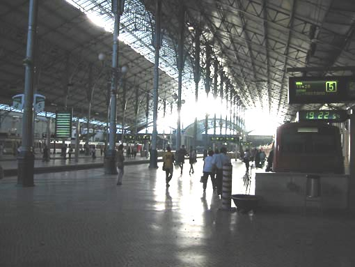
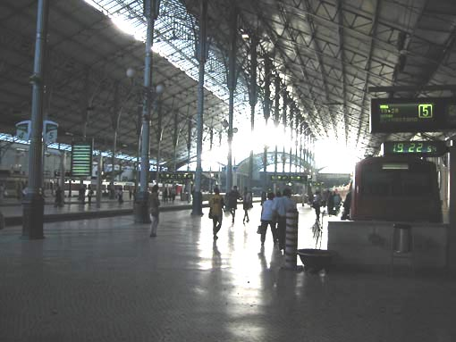

zanimiva zgradba .. ¾elezni¹ka postaja Rossio v Lizboni. Zanimivo je da nikjer ne vidi¹ vlakov in traènic. Na drugi strani zgradbe je namreè hrib in predor, tako vlaki pridejo direkt iz predora v zgradbo. Najprej sploh nismo vedeli da je to postaja, videli smo, da ljudje mno¾ièno hodijo ven pa not, pa smo ¹li pogledat. Najprej gre¹ po stopnicah v prvo nadstropje, nato ¹e dvakrat po tekoèih stopnicah, tako da pride¹ èisto v zgornji ¹tuk .. tam pa peroni :-))) smo bili res preseneèeni, prej bi prièakovali gondolo.